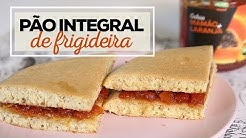

<ion-header>

  <ion-toolbar>
    <ion-buttons slot="start">
      <ion-back-button defaultHref="home" color="primary"></ion-back-button>
    </ion-buttons>
  </ion-toolbar>

</ion-header>

<ion-content>

  <ion-card class="welcome-card">
    <ion-img src="assets/img/nutricao-capa.jpg"></ion-img>
    <ion-card-header>
      <ion-card-title color="primary">NUTRIÇÃO</ion-card-title>
    </ion-card-header>
  </ion-card>

  <ion-item (click)="abrirUrl('https://www.receiteria.com.br/receitas-de-pao-de-frigideira/')">
    <ion-thumbnail slot="start">
      
    </ion-thumbnail>
    <ion-label color="primary">
      12 para café da manhã saudável
    </ion-label>
  </ion-item>

  <ion-item (click)="abrirDicas()">
    <ion-thumbnail slot="start">
      
    </ion-thumbnail>
    <ion-label color="primary">
      Dicas
    </ion-label>
  </ion-item>

  <ion-item (click)="abrirUrl('https://youtu.be/aU7bA1ukHCM')">
    <ion-thumbnail slot="start">
      
    </ion-thumbnail>
    <ion-label color="primary">
      Receita Pão Integral de Frigideira
    </ion-label>
  </ion-item>


</ion-content>